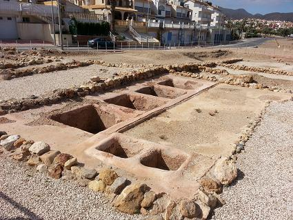
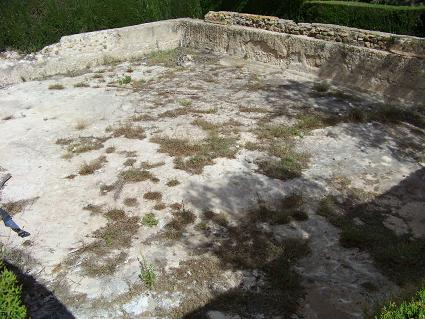
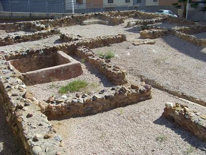
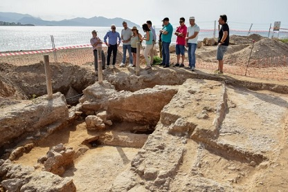
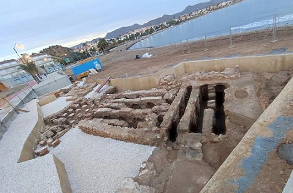

|
MAZARRÓN Situado al sur de la
comunidad murciana. La ocupación humana data del Paleolítico Medio.
En villa del Alamillo se conservan un conjunto de habitaciones en torno a un patio, con un conjunto termal y seis pequeñas piletas para la fabricación de garum y salazones. Data del siglo I y se abandonó a finales del s II. En el entorno del Puerto se localizan restos del conjunto romano del Alamillo. De época republicana se ha documentado los restos de un santuario, con una vía sacra de acceso al cerro y en la cima un conjunto de habitaciones con las paredes decoradas con estucos y un ara en la sala principal.
 Ver: Villas romanas La balsa del Alamillo Balsa romana de distribución
de agua datada en el siglo I, se conocen sus los acueductos de entrada y salida.
La balsa es de forma rectangular y tiene unas dimensiones de 15.30 x 12.30 m de
lado y 1.35 m. de profundidad.
 Factoría romana de salazones de Mazarrón Las estructuras que se conservan son parte de un gran complejo industrial, de auge en los s. IV–V, destinado al proceso de limpieza, troceado y salado del pescado para la fabricación de salazones y salsas de pescado. El resto de la fábrica se extendería bajo las actuales calles y solares colindantes. Ubicación de la Factoría Romana de Salazones. C/ La Torre-C/ San Ginés, Puerto. El miliario encontrado en la
zona de Mazarrón posee la siguiente Inscripción:
En 1990 se descubrieron un
conjunto de casas y una necrópolis tardorromanas. Las casas tenían el típico
sistema de distribución.

En septiembre de 2018, hallan en la playa
de La Isla de Mazarrón, unas 500 piezas de ánforas y platos fenicios. Los
alumnos del curso de Arqueología Subacuática de la UMU encuentran en la isla de
Adentro restos de finales del siglo VII y principios del VI a.e.c.

En diciembre de 2024, con las obras de construcción del paseo marítimo en la playa del Alamillo, se ponen en valor las termas asociadas a la villa romana. Datada en el siglo I. Recordemos que la villa contaba con un área residencial y otra zona industrial. La actividad en dicho enclave tuvo que ser doble, porque además de la fabricación de salazones también se desarrolló una producción agrícola de regadío. Así lo atestiguan una alberca y un acueducto para transportar el agua de las sierras cercanas conservados al otro lado de la carretera. Foto CMM ARQUEOLOGÍA.

|